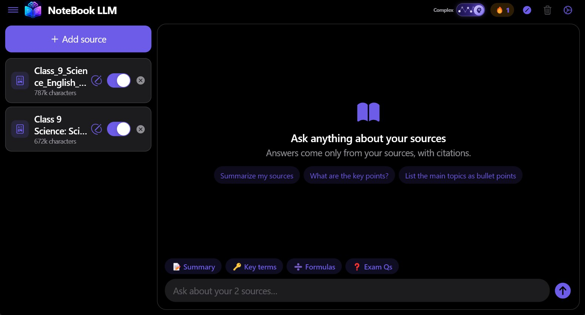
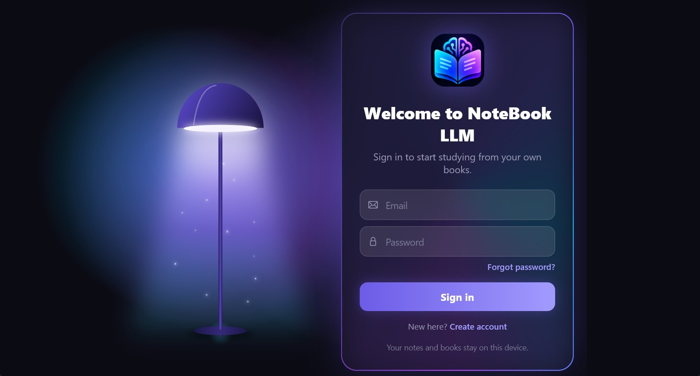

🎯
Answers only from your books
No guessing from the internet. Every answer is drawn from the chapters you added, with the sources it used.
Add your textbooks and PDFs, then ask questions, get summaries and test yourself. Every answer comes only from your sources.

Why NoteBook LLM
No guessing from the internet. Every answer is drawn from the chapters you added, with the sources it used.
Your books and chats are stored on your own device, not in someone else's cloud library.
One switch: quick answers when you are revising, deeper ones when you are stuck on a hard topic.
Features
Ask anything and get answers with references to your own material.
Turn a long chapter into clear, short notes in one tap.
Pull out the important definitions and formulas automatically.
Get likely exam questions with model answers.
Test yourself on any chapter and track your score.
Stay motivated with daily streaks, XP and badges.
Inside the app

How it works
notebook_llm.exe, create your account and add your API key in Settings.FAQ
Yes, the app is free to download and use. For AI answers it needs an API key, which you add once in Settings.
A Windows 10 or 11 PC, an internet connection, and the free account you create on the sign-in screen.
On your own computer. Only the questions you ask, together with the passages needed to answer them, are sent to the AI service. See the Privacy page.
Windows shows a "protected your PC" notice for new apps that are not yet code-signed. Choose More info, then Run anyway.
Not yet. NoteBook LLM is for Windows for now.
PDF, TXT, MD and CSV files, a web link, or text you paste in.
Version 1.0 · Windows 10/11 · 14 MB
⬇ Download for WindowsIf Windows SmartScreen appears, choose “More info” then “Run anyway”.